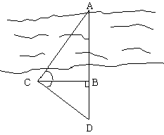
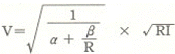

산림기사 (2008-05-11 기출문제)
1과목: 조림학
1. 진도 및 남쪽 섬에서 자라며, 일반적으로 온대 중부 이북에서 조림하기 어려운 수종은?
- 잣나무
- 전나무
- 물푸레나무
- 가시나무
(정답률: 70%)

2. 숲을 구성하고 있는 수종이 한 가지인 순림의 단점에 대한 설명으로 틀린 것은?
- 순림은 입지자원을 고루 이용할수 없다.
- 단일수종의 숲은 양분이 효율적으로 이용될수 없다
- 숲의 구성이 단조로워서 그 생태계가 허양할 수 있다.
- 낙엽의 분해속도가 높아 토양의 영양상태가 과다하게 유지된다.
(정답률: 74%)
3. 수광벌에 대한 설명으로 옳은 것은?
- 갱신을 위한 벌채 중 최종벌이다.
- 울폐된 임관을 소개시켜 낙엽층의 부식을 도모하고 결실촉진을 꾀하는 벌채이다.
- 무육벌의 일종으로 제벌이라고도 한다.
- 건울의 일조시간을 늘이기 위해 인접목을 벌채하는 것이다.
(정답률: 60%)
4. 잣나무림에서 강한 가지치기 효과라고 할 수 없는 것은?
- 무절재의 생산
- 완만재의 생산
- 줄기의 생장량 증가
- 임지비배 효과
(정답률: 55%)
5. 주로 수선법을 이용하여 종자를 선별하는 수종은?
- 잎갈나무, 소나무, 오리나무
- 잣나무, 향나무, 측백나무
- 밤나무, 호두나무, 상수리나무
- 모든 종자
(정답률: 46%)
6. 천연림가꾸기의 간벌림 보육작업에 대한 설명으로 거리가 먼 것은?
- 1차 보육은 우세목의 평균수고가 10m 이상되는 시기이다.
- 2차 보육은 우세목의 평균수고가 12 ~16m 사이에 실시한다.
- 미래목을 선정하고 제거대상 임목을 제거하여 임분 밀도를 조절한다.
- 유령림단계의 마지막 보육 후 2~4년, 혹은 5~6년이 경과된 때가 적당하다.
(정답률: 30%)
7. 광색속인 파이토크롬에 대한 설명으로 옳은 것은?
- 암흑 속에서 기른 식물체에서 많이 검출된다.
- 분자량이 1200Dalton 이다.
- 생장점 부근에서 가장 적다.
- 아주 높은 광도에서만 반응한다.
(정답률: 67%)
8. 파종 1개월 정도 전에 노천매장하여 발아촉진에 도움이 되는 수종은?
- 소나무
- 잣나무
- 느티나무
- 은행나무
(정답률: 62%)
9. 간벌에 대한 설명으로 틀린 것은?
- 간벌은 원칙적으로 인공조림 된 동령림분에 적용되는 조림기술로 확립되었다.
- 간벌은 크게 정성간벌과 정량간벌로 구분한다.
- 정성간벌은 임목본수와 현존량으로 결정된다.
- 지위가 '상'인 활엽수종의 간벌개시기는 20 ~ 30년이다.
(정답률: 52%)
10. 엽분석으로 수목의 영양상태를 진단하기에 가장 적당한 시기는?
- 3~4월
- 5~6월
- 7~8월
- 9~10월
(정답률: 50%)
11. 개벌왜림작업법에서 벌기에 도달한 참나무류의 버섯용원목 특용 ㆍ 소경재의 지름으로 가장 적당한 범위는?
- 10~20cm
- 20~25cm
- 25~30cm
- 30cm 이상
(정답률: 49%)
12. 다음 중 일반적으로 사용되는 접목방법과 접목수종이 바르게 연결되어 있지 않은 것은?
- 할접법 - 감나무
- 절접법 - 밤나무, 감나무, 살구나무
- 복접법 - 잣나무
- 아접법 - 과목류, 장미, 관상수종
(정답률: 33%)
13. 다음 중 구과에 대하여 중량을 기준으로 한 정선종자의 수율이 가장 높은 수종은?
- 해송
- 잣나무
- 소나무
- 리기다소나무
(정답률: 60%)
14. 알칼리성 토양에서 잘 자라는 수종들로만 짝지은 것은?
- 소나무, 전나무
- 전나무, 가문비나무
- 전나무, 회양목
- 서어나무, 회양목
(정답률: 49%)
15. 다음 중 내응력이 가장 강한 수종은?
- 향나무
- 주목
- 사시나무
- 물푸레나무
(정답률: 80%)
16. 다음 중 삽목 발근이 비교적 용이한 수종은?
- 닥나무
- 일본잎갈나무
- 잣나무
- 옻나무
(정답률: 44%)
17. 뿌리를 통하여 흡수된 질소, 인, 칼륨 등의 무기양료가 잎까지이동되는 주요 통로가 되는 조직은?
- 수관
- 목부
- 사부
- 수지관
(정답률: 57%)
18. 종자의 품질을 알아보기 위해 순정종자의 무게를 측정한 결과 종자시료 100g 중에서 순정종자는 50g 이었다. 또한 임의로 160개의 순정종자만을 골라 발아를 시켜보았더니 80개가 발아하였다. 이러한 종자의 효율은?
- 25 %
- 50 %
- 75 %
- 80%
(정답률: 55%)
19. 다음 조건일 때 잣나무의 파종량을 계산하면 약 몇 kg인가? (단, 파종상 면적 400m2, 순량율98%, 발아율 64%, 실중 540g, 남겨둘 묘목본수 400본/m2, 묘목잔존율 80%)
- 172.2
- 243.4
- 318.3
- 567.6
(정답률: 36%)
20. 다음 우리나라 산림의 지세인자 중 일반적으로 지위지수가 높은 곳을 설명하는 것은?
- 산의 하부 계곡 지역
- 양지바른 산의 남향 및 서향 사면
- 소나무 순림이 대면적으로 집단을 이룬 곳
- 산의 정상 부근에 존재하는 급경사 지역
(정답률: 39%)
2과목: 산림보호학
21. 표징 중 번식기관에 속하지 않는 것은?
- 분생자병
- 자좌
- 자낭각
- 병자각
(정답률: 36%)
22. 소나무재선충이 매개충인 솔수염하늘소의 몸속으로 침입하는 시기는 언제인가?
- 고사목내 솔수염하늘소의 노숙유충 시기
- 고사목내 솔수염하늘소의 번데기 시기
- 고사목내 솔수염하늘소의 우화된 성충 시기
- 고사목내 솔수염하늘소의 증식기 유충 시기
(정답률: 72%)
23. 곤충의 체벽 중 공관을 통해 키틴질을 분비하여 표피를 형성하게 하는 층은?
- 외표피
- 원표피
- 진피층
- 기저막
(정답률: 47%)
24. 미국흰불나방의 월동 형태로 가장 적합한 것은?
- 번데기로 나무 틈
- 유충으로 나무속
- 알로 땅속
- 성충으로 땅속
(정답률: 69%)
25. 산림해충의 천적이 아닌 것은?
- 기생파리류
- 무당벌레류
- 방패벌레류
- 풀잠자리류
(정답률: 56%)
26. 볕데기는 어느 것에 원인이 되어 생기는가?
- 산화
- 일사
- 밑깎기작업
- 일조시간
(정답률: 60%)
27. 다음 중 아황산가스 공해에 가장 약한 수종은?
- 은행나무
- 편백
- 소나무
- 꽝꽝나무
(정답률: 48%)
28. 수목의 그을음병을 방제하는데 가장 알맞은 것은?
- 살충제로 진딧물과 깍지벌레를 구제한다.
- 종자소독을 한다.
- 중간 기주를 제거한다.
- 토양소독을 한다.
(정답률: 67%)
29. 흰가루병이 발생한 잎은 흰가루를 뿌려 놓은 듯한 증상이 특징적이다. 이때 병원균의 포자 형태는?
- 자낭포자
- 난포자
- 접합포자
- 분생포자
(정답률: 48%)
30. 대추나무 빗자루병에 대한 설명으로 틀린 것은?
- 마름무늬매미충에 의해 충매전염된다.
- 옥시테트라사이클린 수간주입법에 의해 치료될 수 있다.
- 주요 병징은 황화, 절간생장축소, 엽화현상이다.
- 바이러스에 의해 발생하는 수병이다.
(정답률: 64%)
31. 산불에 의한 토양피해 양상이 아닌 것은?
- 유효 광물질의 유실
- 지표유하수의 감소
- 저수기능의 감퇴
- 토양공극률의 감소
(정답률: 59%)
32. 오리나무잎벌레의 월동 형태는?
- 성충
- 유충
- 번데기
- 알
(정답률: 59%)
33. 해충의 경제적 피해 허용수준을 가장 적절하게 설명한 것은?
- 경제적 피해를 주는 최대의 밀도를 말한다.
- 경제적 가해수준에 달하는 것을 억제하기 위하여 직접적인 방제를 해야 하는 밀도를 말한다.
- 일반적 환경조건하에서 해충의 평균 밀도로서 허용이 가능한 밀도 수준을 말한다.
- 경제적 피해를 주는 최소의 밀도 수준으로 해충의 피해액과 방제비가 같은 수준의 밀도를 말한다.
(정답률: 30%)
34. 세균이 수목을 침입하는 주요 경로로서 가장 거리가 먼것은?
- 밀선
- 상처
- 피목
- 각피
(정답률: 60%)
35. 모잘록병균의 중요한 월동 장소는?
- 곤충체 내
- 나무줄기
- 토양
- 잡초
(정답률: 75%)
36. 솔나방 성충의 출현시기는?
- 2 ~ 3월
- 3 ~ 4월
- 4 ~ 5월
- 7 ~ 8월
(정답률: 50%)
37. 수목에 피해를 주는 수병 중 자낭균에 의한 것은?
- 벚나무 빚자루병
- 뽕나무 오갈병
- 잣나무 털녹병
- 삼나무 붉은마름병
(정답률: 62%)
38. 단성생식으로 증식하는 것으로만 묶인 것은?
- 솔잎혹파리, 솔껍질깍지벌레
- 밤나무혹벌, 진딧물
- 솔나방, 미국흰불나방
- 오리나무잎벌레, 복숭아명나방
(정답률: 67%)
39. 잣나무 털녹병균 담자포자의 일반적인 비산거리는?
- 보통 30m 내외
- 보통 300m 내외
- 보통 3km 내외
- 보통 30km 내외
(정답률: 60%)
40. 솔나방의 학명으로 옳은 것은?
- Lymantria dispar
- Dendrolimus spectabilis
- Hyphantria cunea
- Euproctis flava
(정답률: 52%)
3과목: 임업경영학
41. 임지기망가 최대의 시기에 관한 설명으로 틀린 것은?
- 주벌수익의 증대속도가 빨리 감퇴할수록 빨리 나타난다.
- 간벌수익이 클수록 빨리 나타난다.
- 이율이 낮을수록 빨리 나타난다.
- 채취비가 적을수록 빨리 나타난다.
(정답률: 50%)
42. 임업이율 중 일반 물가등귀율을 내포하고 있는 것은?
- 자본이자
- 평정이율
- 장기이율
- 명목이율
(정답률: 57%)
43. 지속 가능한 산림의 4가지 견해 중에서 “자연이 무엇을 하든지 간에 인간이 무엇인가를 하는 것 보다 낫다.”라고 하는 자연주의적 가치체계를 채택하는 견해는?
- 목재 보속 수확 견해
- 다목적 이용 - 보속 수확 견해
- 자연적으로 기능하는 산림생태계 견해
- 지속 가능한 인간 - 산림생태계 견해
(정답률: 68%)
44. 임업의 각 생산요소에 귀속하는 임업소득의 계산방법에 의해 자본에 귀속하는 소득은? (단, 임업소득 : 10,000,000원, 지대 : 1,000,000원, 가족노임추정액 : 5,000,000원, 자본이자 : 500,000원)
- 3,500,000원
- 4,000,000원
- 4,500,000원
- 10,500,000원
(정답률: 34%)
45. 우리나라의 수확표와 관계가 없는 것은?
- 지위지수
- 평균직경
- 표고
- 흉고단면적
(정답률: 60%)
46. 산림경영계획에 대한 설명으로 옳은 것은?
- 국가적 또는 지역적인 관점에서의 종합적인 계획에 근간을 두고 있다.
- 산림기본계획은 지역산림계획에 따라 특별시장, 광역시장, 도지사 및 산림청장이 수립한다.
- 산림청장은 지역산림계획을 5년 단위로 공표하거나 상황에 따라 수정한다.
- 국유림을 경영 ㆍ 관리하는 기관은 산림청-국유림관리소-지방산림청 순서체계로 구성된다.
(정답률: 52%)
47. 앞으로도 수년간 수확이 정기적으로 예상되는 밤나무 산의 평가는 어떤 방법으로 이루어져야 하는가?
- 임지비용가
- 임지법
- 대용법
- 기망가법
(정답률: 72%)
48. 제지회사가 펄프원료를 공급하기 위하여 경영하는 산림의 경영형태는?
- 주업적 임업경영
- 부차적 임업경영
- 종속적 임업경영
- 비종속적 임업경영
(정답률: 60%)
49. 측고기 사용상의 주의사항으로 틀린 것은?
- 측정하고자 하는 나무의 정단과 밑이 잘 보이는 지점을 선정한다.
- 수목까지의 수평거리는 될 수 있는 한 수고와 같은 거리에서 측정한다.
- 수평거리를 알기 어려울 때는 사거리을 측정하고, 그 고저각을 재 수평거리로 환산한다.
- 경사진 곳에서 측정할 때는 오차를 줄이기 위해 끝이 잘 보이는 높은 곳에서 측정한다.
(정답률: 66%)
50. 어떤 산림기계의 취득원가가 5,000,000원, 잔존가치가 500,000원이고, 그 내용연수가 50년 이라고 할 때, 이 기계의 연간 감가삼각비를 정액법으로 구하면 얼마인가?
- 90,000원
- 100,000원
- 500,000원
- 1,100,000원
(정답률: 67%)
51. 산림관리협회에서는 “산림관리에 관한 FSC의원칙과 규준”을 기초로 하여 평가ㆍ인정ㆍ모니터링을 행하고 있다, 다음 중 FSC 의 10개 원칙으로 거리가 먼 것은?
- 원주민의 권리
- 지역사회와의 관계와 노동자의 권리
- 조림
- 지구의 탄소순환
(정답률: 49%)
52. 재무제표 중 가장 기본이 되는 것으로만 짝지어진 것은?
- 손익계산서, 대차대조표
- 손익계산서, 자금운용표
- 자금운용표, 대차대조표
- 제조원가명세서, 자금운용표
(정답률: 50%)
53. 평균생장량과 연년생장량 간의 관계에 대한 설명으로 틀린 것은?
- 평균생장량곡선은 원점을 지나는 직선이 총생장량곡선과 접하는 시점에서 최고점에 달한다.
- 연년생장량곡선은 총생장량곡선이 변곡점에 이르는 시점에 최고점에 달한다.
- 두 곡선은 총생장량 곡선이 최고에 달하는 시점에서 서로 만난다.
- 두 곡선이 만나기 전에는 연년생장량이 더 크다.
(정답률: 40%)
54. 임업원가 관리에 있어서 원가의 유형은 사용 목적에 따라 여러 가지로 분류할 수 있다. 다음 중 기회원가에 대한 설명으로 옳은 것은?
- 특정부문의 제품 또는 공정별로 쉽게 알아낼 수 있는 원가를 말한다.
- 제품의 생산수준에 따라 비례적으로 변동하는 원가를 말한다.
- 제품의 생산수준이 변하여도 총액이 고정되어 있는 원가를 말한다.
- 여러 가지 생산활동방안 중에서 어느 한 가지를 선택함으로써 다른 방안을 선택할 수 없게 되어 포기한 수익을 말한다.
(정답률: 73%)
55. 임상조사에서 활엽수림이 되는 것은?
- 침엽수가 50% 이상인 산림
- 활엽수가 50% 이상인 산림
- 침엽수가 75% 이상인 산림
- 활엽수가 75% 이상인 산림
(정답률: 73%)
56. 윤척의 사용법에 대한 설명으로 틀린 것은?
- 경사진 곳에서는 낮은 곳에서 측정한다.
- 흉고부(지상 1.2m)를 측정한다.
- 흉고부에 가지가 있으면 가지 위나 아래를 측정한다.
- 수간 축에 직각으로 측정한다.
(정답률: 62%)
57. 자연휴양림의 입지선정 조건이 아닌 것은?
- 수원이 풍부한 곳
- 개발이 가능하고 각종 여건이 용이하며 접근성이 좋은 곳
- 경관이 수려하고 임상이 울창한 곳
- 생물의 종이 풍부하고 개발이 제한되어 있는 곳
(정답률: 65%)
58. 매년 산림의 경영관리에 투입되는 비용이 20만원이 소요되는 경우의 그 자본가는 얼마인가? (단,년 이율은 5% 이다.)
- 1,000,000원
- 2,000,000원
- 3,000,000원
- 4,000,000원
(정답률: 66%)
59. 미처분 임산물은 임업경영 자산 중 어디에 속하는가?
- 유동자산
- 임목자산
- 고정자산
- 부채
(정답률: 68%)
60. 다음 중 휴양림의 경영방침과 가장 거리가 먼 것은?
- 휴양시설 주변에 조경수를 식재한다.
- 벌채시업은 가급적 개벌로 한다.
- 특별히 경관을 보존해야 할 지역은 벌채시업을 가급적 억제한다.
- 임도시설을 산책로, 순환로 등으로 이용한다.
(정답률: 72%)
4과목: 임도공학
61. 다음 건설장비 중 흙 다짐용 기계로 사용할 수 없는 것은?
- 백호우
- 진동롤러
- 진동 콤팩터
- 불도저
(정답률: 66%)
62. 그림에서 BC = 30m, BD = 10m 일 때 AB측선의 길이는?

- 90m
- 100m
- 110m
- 120m
(정답률: 49%)
63. 직접 공사비를 산출하는데 필요한 것은?
- 시방서
- 공정표
- 일위대가표
- 공사설명서
(정답률: 50%)
64. 지형에 따른 설치위치별 효율성과 경제성이 가장 높은 임도는?
- 능성임도
- 기슭임도
- 산복임도
- 계곡임도
(정답률: 34%)
65. 비탈면 흙막이 공법의 설명으로 틀린 것은?
- 비탈면 물매를 완화시키고 붕괴의 위험성이 있는 비탈면의 안정성을 유지시킨다.
- 이토층의 밑부분을 지지 ㆍ 침식의 방지 등을 위하여 비탈면에 설치하는 각종 공작물의 총칭이다.
- 흙막이의 종류로는 콘크리트벽흙막이, 돌망태흙막이, 통나무흙막이, 판흙막이, 바자흙막이, 콘크리트의 목흙막이 등이 있다.
- 급물매나 대면적으 비탈면에 사용되며 비탈면의 토질이 대단히 혼효성으로 복잡하고, 마사토 등으로 구성되어 취급이 곤란하며 지하수가 용출하거나 연약한 지층 구조가 있는 곳에 주로 시공한다.
(정답률: 59%)
66. 일반지형에서 설계속도가 30km/시간 일 때 임도에서 사용 할 수 있는 최소곡선반지름의 기준은?
- 50m
- 40m
- 30m
- 20m
(정답률: 75%)
67. 임도의 횡단구조에 관한 설명으로 틀린 것은?
- 임도의 축조한계는 유효너비, 길어깨 및 옆도랑의 너비를 포함한 공간이다.
- 길어깨는 차도 양쪽에 접속하여 설치하며, 폭은 50cm ~ 1m의 범위로 한다.
- 횡단기울기는 노면의 종류에 따라 다르며, 포장한 노면에서는 1.5 ~ 2%로 한다.
- 횡단기울기는 배수에 지장이 없는 범위에서 가급적 완만한 것이 운전상 안전면에서 유리하다.
(정답률: 40%)
68. 롤러의 표면에 돌기를 만들어 부착한 것으로 돌기가 전압층에 관입함에 의해 풍화암을 파쇄하여 흙속의 간극수압을 분산시키며, 점착성이 큰 점질토의 다짐에 가장 적합한 롤러는?
- 탬핑롤러
- 탠덤 롤러
- 머태덤 롤러
- 로드 롤러
(정답률: 69%)
69. 산림작업에 있어서 노동재해가 가장 많이 발생되는 요일은?
- 월요일
- 화요일
- 수요일
- 목요일
(정답률: 62%)
70. 다음 임도에 대한 설명으로 옳은 것은?
- 임도개발정도에 따라서 집재비는 감소되지만, 임도개설비, 임도유지관리비, 운재비는 증가된다.
- 양방향 평균집재거리는 임도간격의 1/2이다.
- 적정임도밀도는 집재비용과 임도개설비의 합이 가장 최대화되는 임도밀도의 경우이다.
- 임도간격이 넓어지면 임도밀도는 증가하고, 임도밀도가 낮아지면 임도간격은 좁아진다.
(정답률: 39%)
71. 영선에 대한 설명으로 적합하지 않은 것은?
- 경사면과 임도시공기면과의 교차선이다.
- 임도시공시 절토와 성토작업을 구분하는 경계선이다.
- 영선은 종단물매의 높이와 방향을 표시한 것이므로 영선측량 이후 별도의 레벨측량이 필요하다.
- 영선이란 절토량과 성토량이 동일하기 때문에 붙여진 이름이다.
(정답률: 55%)
72. 1 : 50000의 지형도 축척에서 지상거리 2500m 일 때의 도상거리는 몇 cm 인가?
- 2.5
- 5
- 10
- 50
(정답률: 56%)
73. 임도의 위계 중 가장 높은 것에서부터 낮은 순으로 나열된 것은?
- 간선임도 → 지선임도 → 부임도
- 지선임도 → 부임도 → 간선임도
- 주임도 → 간선임도 → 작업도
- 간선임도 → 지선임도 → 작업도
(정답률: 55%)
74. 종단면도에 표시되지 않는 것은?
- 측점번호
- 종단곡선
- 성토고, 절토고
- 성토 및 절토면적
(정답률: 55%)
75. 노동재해의 원인을 인적요인, 물적요인, 작업환경요인으로 나눌 때 물적요인이 아닌 것은?
- 기계장비의 안전장치 불완전
- 작업방법의 부적당
- 보호장비의 미착용
- 기계장비의 밀집배치
(정답률: 65%)
76. 노체를 구성하고 있는 순서가 옳은 것은?
- 노상 → 기층 → 노반 → 표층
- 노상 → 노반 → 기층 → 표층
- 기층 → 노반 → 노상 → 표층
- 기층 → 노상 → 노반 → 표층
(정답률: 69%)
77. 산림을 개발할 때 일반적으로 처음 시설되는 임도는?
- 계곡임도
- 능선임도
- 산복임도
- 산정임도
(정답률: 47%)
78. 블레이드면의 방향이 진행방향의 중심선에 대하여 20°~ 30°의 경사가 진 도저의 종류는?
- 트리불도저
- 스트레이트도저
- 앵글도저
- 틸트도저
(정답률: 59%)
79. 측점수가 8개인 폐합트래버스의 내각을 측정했을 때 각의 총합은?
- 360°
- 540°
- 900°
- 1080°
(정답률: 63%)
80. 측선의 길이가 50m이고 위거의 부호가(-), 경거의 값이 +10m 일 때 이 측선의 방위각은?
- 258°27'46.9“
- 168°27'46.9”
- 11°32'13.1“
- 101°32'13.1”
(정답률: 55%)
5과목: 사방공학
81. 유역면적이 1ha이고, 최대 시우량이 90mm/hr 일 때, 시우량법에 의한 계획 지점에서의 최대홍수유량은 몇 m3/sec? (단, 유거계수는 0.8로 한다.)
- 20
- 2
- 0.2
- 0.02
(정답률: 59%)
82. 해안사구 중에서 해안에 가장 인접하여 조성되어 있는 사구는?
- 후사구
- 자연사구
- 주사구
- 전사구
(정답률: 67%)
83. 콘크리트 배합의 일반적인 경향으로 가장 부적합한 것은?
- 자갈의 입자가 클수록 시멘트의 사용량이 많아진다.
- 모래의 입도가 작아질수록 자갈의 사용량이 많아진다.
- 동일 강도일 때는 슬럼프치가 커지면 시멘트 사용량이 증가한다.
- 모래의 입자가 작을수록 시멘트의 사용량이 증가한다.
(정답률: 60%)
84. 석재를 사용하여 구축물을 만들 때 비탈물매가 1 : 1 보다 완만한 경우에 사용되는 것은?
- 찰쌓기
- 돌붙임
- 골쌓기
- 메쌓기
(정답률: 45%)
85. 선떼붙이기 공법의 설명으로 틀린 것은?
- 1m 당 떼의 사용 매수에 따라 1-9급으로 나뉜다.
- 떼붙이기의 비탈물매는 대체로 1 : 0.5 ~ 1 : 0.7정도가 적당하다.
- 1급 선떼붙이기에 가까울수록 고급 선떼붙이기이다.
- 발디딤의 너비는 일반적으로 40cm 정도이다.
(정답률: 44%)
86. 파종에 의하여 비탈면에 응급히 식생을 도입하고자 하는 경우 외래 초본류를 주로하고 여기에 재래 초본류를 첨가하는 이유로 틀린 것은?
- 외래 초본류는 일반적으로 발아가 빠르고, 조기에 지표의 피복효과가 기대되기 때문이다.
- 외래 초본류는 종자의 구득이 일반적으로 용이하기 때문이다.
- 외래 초본류는 엽량과 뿌리가 많으므로 지표와 지중에 유기물질을 집적하여 토양의 성질을 개선해 주기 때문이다.
- 외래 초본류는 생육이 왕성하여 뿌리의 자람이 좋고, 토양의 긴박력이 작기 때문이다.
(정답률: 47%)
87. 황폐산지를 황폐의 진행상태 및 정도 등에 따라 구분할 때 황폐산지의 유형에 속하지 않는 것은?
- 척압임지
- 임간나지
- 붕괴지
- 민둥산
(정답률: 63%)
88. 사면혼파공법의 일반적인 시공요령으로 부적합한 것은?
- 비탈면다듬기공사를 하고, 견지반을 노출시키지 않도록 한다.
- 부토사는 그 하부에 흙막이공작물로써 완전히 처리한다.
- 비탈면에 수직높이 60cm 정도, 나비 20 ~ 30cm 의 수평계단을 끊는다.
- 비탈면에는 수평으로 작은 골을 파서 종자의 유실을 방지한다.
(정답률: 45%)
89. 평균유속 V 와 임계유속 Vg가 같을 때에 대한 설명으로 옳은 것은?
- 계상에 침식이 가장 많이 일어난다.
- 유수의 속도가 가장 높다.
- 유수가 사력으로 포화된 상태이다.
- 계수에 아무런 영향을 미치지 않는다.
(정답률: 54%)
90. 재래 초본류(향토식물)와 외래 초본류를 혼파할 때 다음 중 재래 초본류에 해당하는 것은?
- 우산잔디
- 나도김의털
- 갈풀
- 비수리
(정답률: 60%)
91. 비탈붕괴 ㆍ 산사태 발생의 인위적인 요인은?
- 동결융해
- 지진
- 강우, 적설
- 수목의 벌채
(정답률: 78%)
92. 황폐계천 평균유속 산정에 활용되는 Bazin공식인

에서 자갈이 있는 불규칙한 자연수로의 조도계수 α,β의 적용값으로 각각 가장 적합한 것은?- α : 0.00015, β : 0.0000045
- α : 0.00019, β : 0.0000133
- α : 0.00040, β : 0.0007000
- α : 0.00024, β : 0.0000600
(정답률: 53%)
93. 화성암은 화학적으로 어떤 성분함량에 따라 산성암, 중성암, 염기성암으로 구분되는가?
- Al2O3
- SiO2
- Fe2O3
- K2O
(정답률: 63%)
94. 절토사면의 토질별 적용공법으로 가장 적합한 것은?
- 모래층 비탈면 - 격자틀붙이기공법
- 점질성 비탈면 - 분사파종공법
- 경암 비탈면 - 전면식생공법
- 사질토 비탈면 - 새집붙이기공법
(정답률: 42%)
95. 사방댐의 적지로 적합하지 않은 곳은?
- 합류점 하류 양안이 좁고, 상류가 광대한 장소
- 상류 계상 비탈이 완만한 장소
- 계상 및 양안에 암반이 있는 장소
- 산각이 붕괴하여 공작물이 없어 토사유출이 심한 장소
(정답률: 32%)
96. 우리나라에서 치산녹화용으로 식재되고 있는 주요 사방조림 수종과 거리가 먼 것은?
- 아까시나무
- 잣나무
- 산오리나무
- 리기다소나무
(정답률: 60%)
97. 사방댐의 축조재료 중 친환경적 재료와 거리가 먼 것은?
- 콘크리트
- 통나무
- 흙
- 돌
(정답률: 76%)
98. 10mm 와이어로프를 당김줄로 사용하는 윈치의 견인력이 1.5톤 이고, 이 로프의 절단하중이 5.6톤 일 때의 안전계수는?
- 약 0.27
- 약 2.7
- 약 3.7
- 약 7.5
(정답률: 48%)
99. 교통이 불편한 황폐산지에서 경사가 급하고 유수량이 많을 때 시공해야 하는 산복수로로 적합한 공법은?
- 떼붙임수로
- 파종수로
- 돌수로
- 콘크리트 반원관 수로
(정답률: 52%)
100. 붕괴 현황조사에서 중요시하는 붕괴의 3요소에 해당되지 않는 것은?
- 붕괴 위치
- 붕괴 면적
- 붕괴 평균 깊이
- 붕괴 평균 경사각
(정답률: 62%)